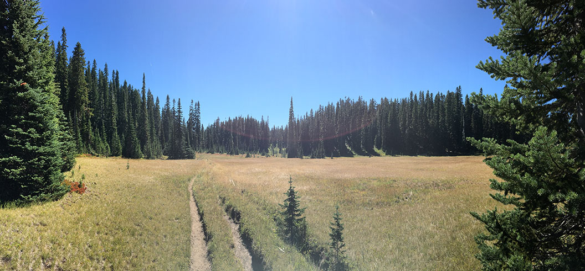
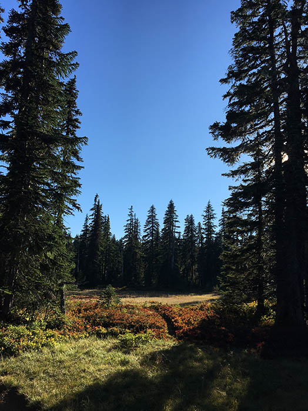
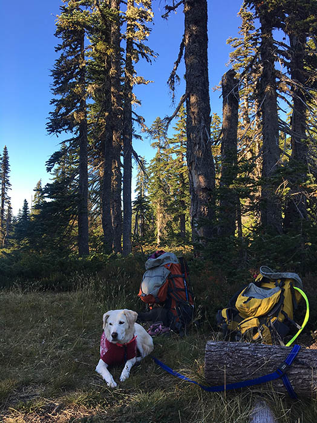
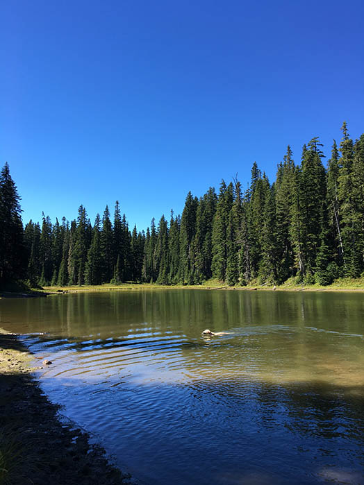
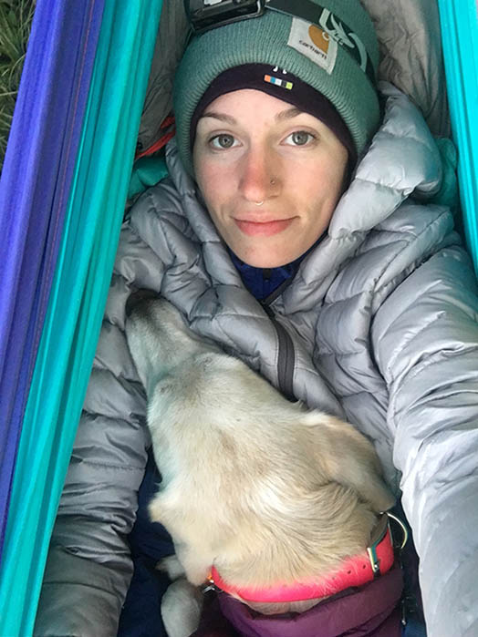
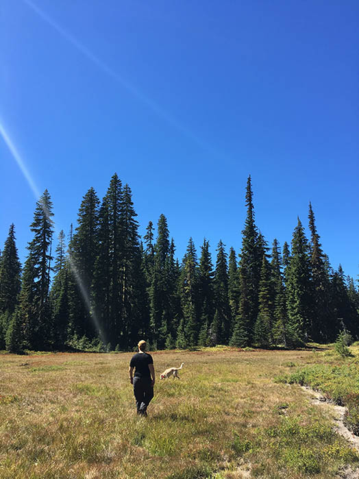

Tour de Lac, Sep 1, 2018
Well! We had labor day weekend, and a three day trip planned to explore the Indian Heaven Wilderness near Mt. Adams, VERY exciting, as my favorite hiking pal Jillian and I have not really gotten to spend much time in that area! At the very last minute we decided my trail pup Gabby should tag along, because she is the sweetest dog in the world. We had our eyes set on the Bird Mountain Loop, a fairly flat 10 mile loop that visits a few lakes, and offers some captivating & timeless meadows.
We began hiking a steep and rocky trail towards heaven, the trail went up a ridge that was exposed by the sun, and then entered into a silent and shady old growth forest, spotted by sunlight. We arrived at our first lake, Cultus, and decided it was a great place to stop and eat lunch, we fed Gabby a little snack and let her run and swim for a bit!
By the time we had hiked about 4 or 5 miles, arriving at the PCT junction aptly named Junction Lake, we decided we should start exploring a place to camp. The great thing about doing a loop hike in a place with a large trail system, and having great map systems on hand, was that Jillian and I were free to decide to extend our trail south and create a longer loop, heading towards Blue lake.
By about 5pm we reached Blue lake, which was beautiful, but was also being blasted by the evening winds. Lower Tombstone lake, protected by the wind, was small and already crowded with large groups. We pressed on, rose a few hundred feet in elevation, to Sahale Tyee lake, which was also full. I decided on Umtux lake, just a mile ahead. Still no good, and we were getting hungry! From there we explored the treelines for a place to disperse camp in our hammocks. The great thing about hammock camping is that you have a little more freedom in your camping area. We ended up continuing past Umtux, through a recent burn area, and headed to a lake called Rock Lake. There was a campsite there and we immediately put our packs down, it was silent, kissed by the sunset light, and solitary. With one other group a few hundred feet away, we never heard them during our stay there.
Gabby was ready to sleep as soon as her sweater was on. She was such a trooper! We ended up hiking 9 miles in! We quickly set up our hammocks, fixed dinner, and scouted out where we would hang our food for the night. As we ate dinner, the sunset threw gold over little Rock Lake & a doe with her fawn walked along the edge of the lake and disappeared into the thick forest. Later on, as we settled into our hammocks- Jillian in her own, and me in mine with a Gabby on top- we heard the sound of a coyote pack finding their dinner in the distance. We slept under every star in the sky. How I've missed the starry skies since moving to the city! The night was chilly, and filled with wild dreams for both of us. We arose the next day, after fixing coffee and eating our breakfast bars, we refilled our water and headed out. Our hearts set on another perfect camping site. Jillian and I don't usually plan as we go like this, but I have to say there's a first time for everything and it was my favorite backpacking trip to date.
 We started on the trail again, passing through what seemed like an eternal corridor of meadows separated by small pines and red blueberry bushes. We took an overgrown, rarely used trail in the direction of the PCT, trusting our navigation to meet up on the other side. It worked! The trail was true. As we were walking we looked to the left onto Acker Lake, a small and lonely lake, on a section of trail not often taken, and one single empty campsite. Why not? We stopped, having hiked under three miles! The lake was perfect, three mergansers called it home, they swam and dove all day. Tiny frogs lined the shores of the sandy lake. On the opposite side of the lake we found very large elk tracks, as well as coyote and cougar! Very exciting! We set up our hammocks to overlook the lake, and I played fetch with Gabby in the water for quite some time. We almost didn't know what to do with this free day.
We explored the area, looked at scat, discussed tracks, and finally settled into filling two empty tea bottles with wild blueberries! I ended up getting a crispy sunburnt arm from this but it was worth it! We only saw a few hikers during our long stay at Acker Lake. It was the most peaceful holiday weekend backpacking trip I've ever had. After dinner we took a stroll to the nearby lakes, all within a mile of us: Bear, Elk, and Deer lakes. It was great to see so many large blue lakes! And even greater to see how crowded they were and remember our own private lake! We went back to camp and settled into our hammocks, I tried my best to convince myself to sleep through the morning, but I couldn't stand the thought of missing an opportunity to see wildlife at the lake as the sun rose. I was up by 6am. Why am I like this? Mist covered the lake & the mergansers huddled in the center. I never saw any critters, but Gabby was so obsessed with those waterbirds that she didn't make the most polite sleeping buddy, so I can't say I would have slept in anyway.
 After packing up camp at Acker Lake, we hopped back on the PCT and started walking the remaining 4 miles of our extended loop back to the campground where the truck was parked. Knowing we had over three hours and a large section of forest road driving ahead of us, we tried to hustle. The last leg of trail descending down to the campground seemed neverending. Rocky weathered trail gave our ankles a work out, while the sun beat down and the dust rose. We clocked our total mileage at 18 miles! An added 8 miles to our original 10 mile plan! I gotta say: You can only complete a trip like this and still enjoy yourself if you really know who your hiking buddy is! Thanks Jillian! When we finally arrived at the truck, it didn't take us more than ten minutes to situate and start driving home! I highly recommend this area to anyone who wants to practice their navigation skills, it's also pretty popular, we were lucky to have such a wide expanse of area to share with everyone and never feel crowded. That's all for now, time to make some blueberry jam! Happy trails!